Agricultural Biosecurity Starts Here
Advanced Veterinary Grade Disinfection Solutions For Modern Agriculture
Ubuntu Life Resources delivers scalable agricultural biosecurity solutions through SANI-99™ for AGRI — helping farms, poultry operations, abattoirs, dairies, hatcheries and food processing environments reduce pathogen risks and improve hygiene standards.
Agricultural Biosecurity · Clean Water · Food Security
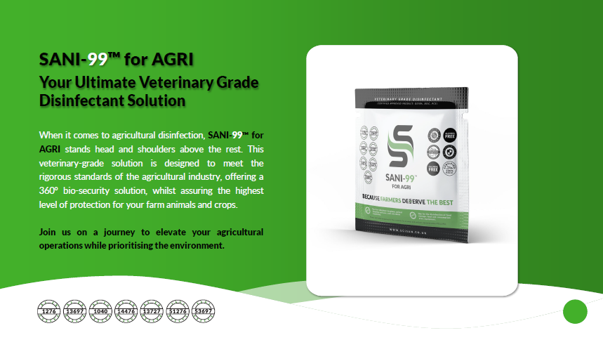
What is SANI-99™ for AGRI?
SANI-99™ for AGRI is a veterinary and food grade agricultural disinfectant designed to support biosecurity across multiple agricultural sectors.
The solution has been developed to assist farms and agricultural facilities in reducing pathogen exposure while supporting hygiene, operational safety and disease prevention protocols.
SANI-99™ for AGRI provides:
- Broad-spectrum disinfection
- 360° biosecurity support
- High efficacy pathogen control
- Long-lasting residual activity
- Food and veterinary grade applications
- Agricultural equipment sanitation
- Facility and livestock area disinfection
Designed for modern agriculture, SANI-99™ for AGRI supports operations ranging from poultry and livestock farming to abattoirs, dairies, aquaculture and food processing facilities.
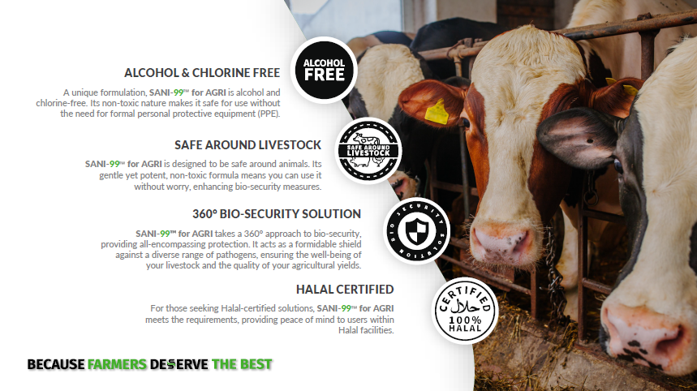
Key Features
360° Agricultural Biosecurity
SANI-99™ for AGRI supports comprehensive agricultural disinfection across livestock facilities, poultry housing, food processing environments, equipment sanitation and operational hygiene protocols.
Alcohol & Chlorine Free
The formulation is alcohol-free and chlorine-free, helping reduce harsh chemical exposure while maintaining strong disinfection performance.
Safe Around Livestock
Designed for agricultural environments where animal welfare remains essential.
Food & Veterinary Grade
Suitable for use across multiple agricultural and food-related applications.
Halal Certified
Supports diverse agricultural and food production requirements.
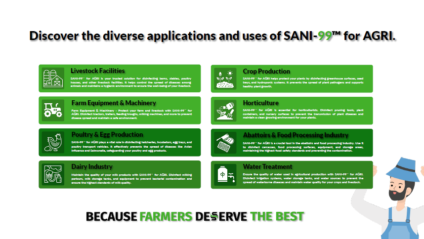
✅ “Discover the diverse applications and uses of SANI-99™ for AGRI”
Industries & Applications
SANI-99™ for AGRI supports a wide range of agricultural industries and operational environments including:
- Poultry Farming
- Livestock Facilities
- Dairy Operations
- Hatcheries
- Abattoirs
- Cold Storage Facilities
- Food Processing Areas
- Aquaculture
- Crop Production
- Horticulture
- Agricultural Machinery
- Water Systems & Foot Baths
The solution can be integrated into both preventative hygiene protocols and active biosecurity management systems.
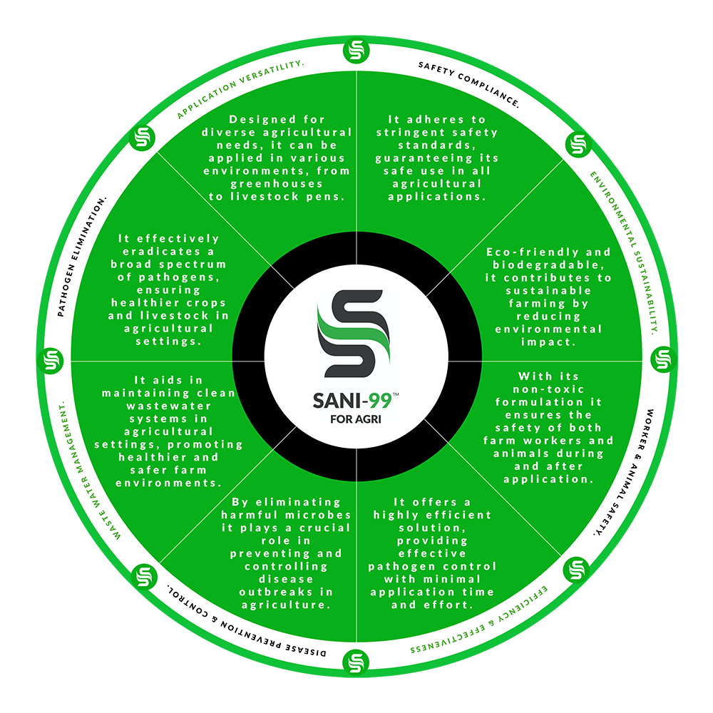
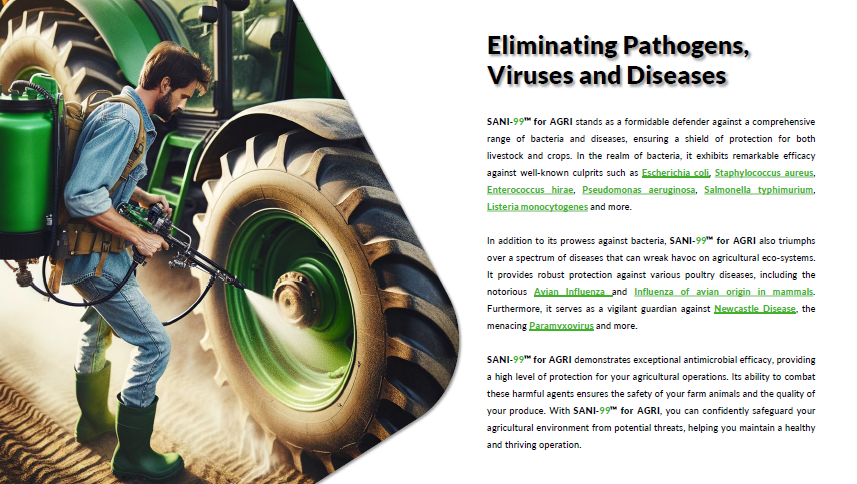
✅ “Eliminating Pathogens, Viruses and Diseases”
Eliminating Pathogens, Viruses & Diseases
SANI-99™ for AGRI has been formulated to assist in controlling and reducing exposure to a broad spectrum of pathogens affecting agricultural environments.
This includes support against:
- E.coli
- Salmonella
- Listeria monocytogenes
- Newcastle Disease
- Avian Influenza
- Swine Flu
- Foot & Mouth Disease
- Poxviridae
- Staphylococcus aureus
- Enterococcus hirae
- Pseudomonas aeruginosa
Its broad-spectrum disinfection capabilities support improved operational hygiene across agricultural sectors.
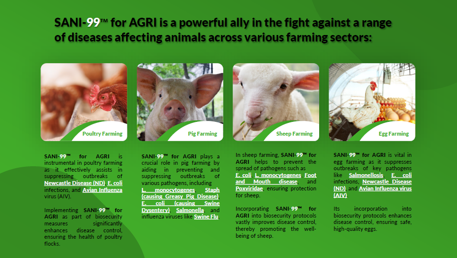
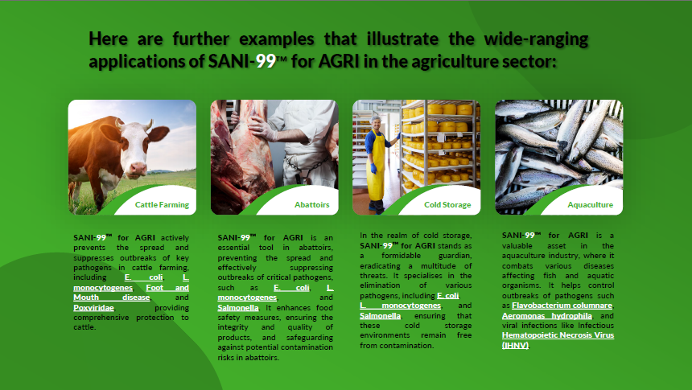
Advanced Poultry Biosecurity
The poultry industry faces increasing pressure from airborne disease transmission, Avian Influenza outbreaks and operational hygiene risks.
SANI-99™ for AGRI supports poultry biosecurity protocols through:
- Poultry housing disinfection
- Fogging applications
- Airborne pathogen reduction support
- Surface sanitation
- Dust suppression support
- Foot bath applications
- Equipment sanitation
The fogging application process assists in improving coverage throughout poultry facilities while supporting operational hygiene standards.
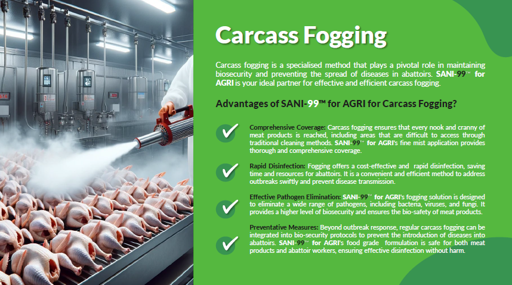
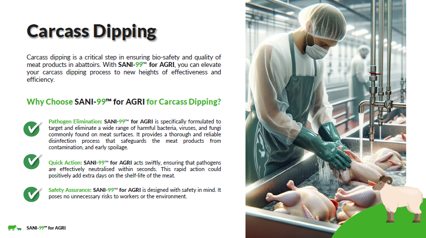
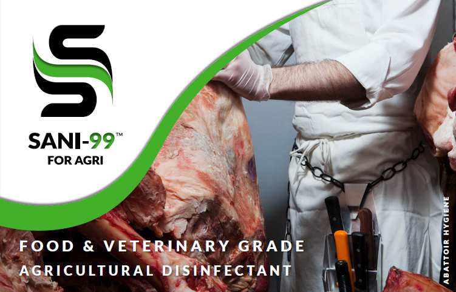
Abattoirs & Food Processing
SANI-99™ for AGRI supports hygiene management within:
- Abattoirs
- Meat processing facilities
- Carcass washing systems
- Equipment sanitation
- Biosecurity control areas
- Food processing environments
The solution assists facilities in maintaining high hygiene standards while supporting contamination reduction strategies and operational sanitation protocols.
Applications include:
- Equipment disinfection
- Surface sanitation
- Carcass dipping
- Processing area disinfection
- Worker hygiene support
- Facility sanitation
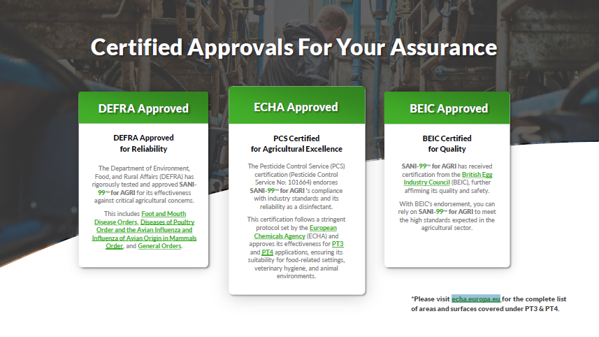
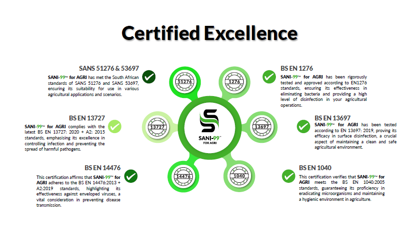
Certifications & Approvals
SANI-99™ for AGRI aligns with multiple international and agricultural disinfection standards and approvals including:
- DEFRA Approval
- ECHA Approval
- BEIC Approval
- EN1276
- EN13697
- EN14476
- EN1040
- EN13727
- SANS 51276
- SANS 53697
These certifications support its use across veterinary hygiene, agricultural biosecurity and food-related operational environments.
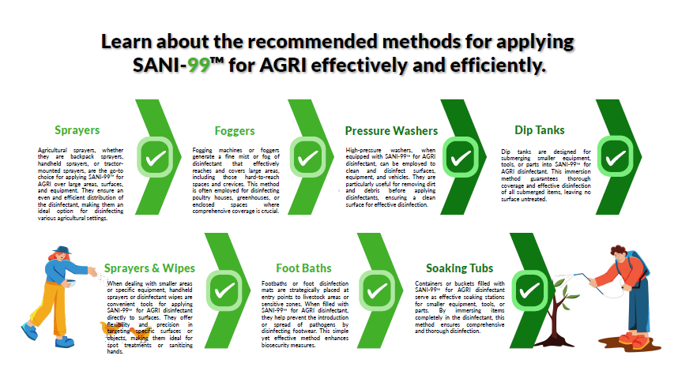
Flexible Application Methods
SANI-99™ for AGRI supports multiple agricultural application methods including:
- Fogging
- Pressure Washers
- Sprayers
- Foot Baths
- Dip Tanks
- Handheld Sprayers
- Soaking Tubs
- Surface Wipes
- Agricultural Machinery Sanitation
This flexibility allows integration into both small-scale and industrial agricultural operations.
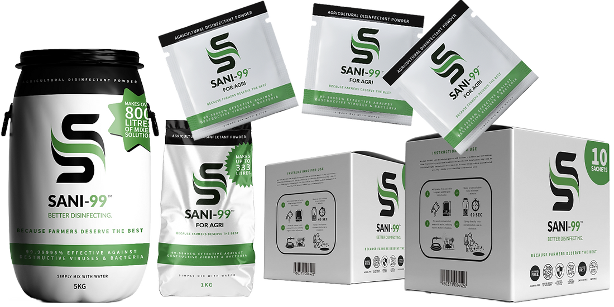
Available Product Formats
96g Sachets
Ideal for:
- Backpack sprayers
- Fogging systems
- Foot baths
- Small-scale sanitation
- Portable applications
1kg – 25kg Tubs
Ideal for:
- Pressure washers
- Large agricultural operations
- IBC systems
- Industrial sanitation
- Commercial agricultural deployment
Smarter Transport. Lower Environmental Impact.
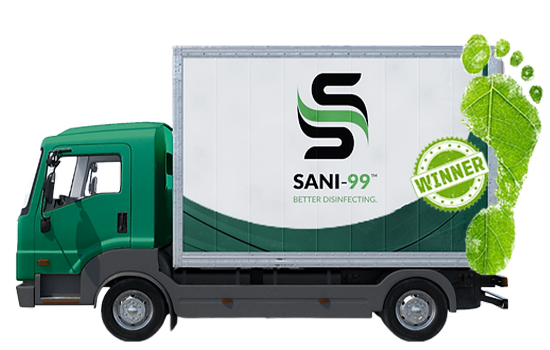
66 Trucks
Transportation requirements
for 2 million litres of
pre-mixed disinfectant
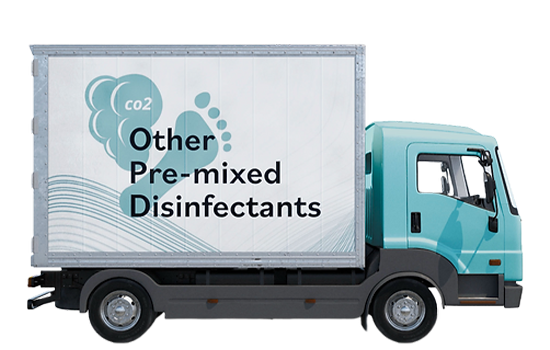
1 Truck
Transportation requirements
for 2 million litres of
SANI-99™ for AGRI disinfectant
At Ubuntu Life Resources, sustainability and operational efficiency form part of our long-term agricultural biosecurity vision.
SANI-99™ for AGRI has been purposefully designed to reduce unnecessary plastic waste, lower transport requirements and improve deployment efficiency across agricultural operations.
Unlike traditional pre-mixed disinfectants, SANI-99™ for AGRI is supplied in concentrated powder form, significantly reducing transport weight, storage requirements and plastic container usage.
Reduced Transport Requirements
Transporting pre-mixed disinfectants at scale creates major logistical and environmental challenges.
Example:
- 2 million litres of traditional pre-mixed disinfectant may require approximately 66 x 30-ton trucks for transportation.
- The equivalent volume using SANI-99™ for AGRI concentrated sachets can be transported using approximately 1 x 30-ton truck.
This dramatically improves:
- Logistics efficiency
- Deployment scalability
- Storage management
- Distribution capability
- Carbon footprint reduction
Designed for Scalable Agricultural Deployment
SANI-99™ for AGRI supports:
- Commercial farms
- Poultry operations
- Abattoirs
- Agricultural distributors
- Government biosecurity programmes
- Emergency outbreak response
- Remote agricultural deployment
Its lightweight concentrated format makes it particularly valuable in regions requiring rapid transport and large-scale agricultural support.
Key Characteristics
- Triple Foil High-Quality Sachets
- Lightweight Powder Solution
- Veterinary Grade Disinfectant
- Highly Concentrated Formula
- Competitive Operational Costing
- Broad-Spectrum Disinfection
- Scalable Agricultural Applications
- Long Shelf Stability
Tailored Agricultural Biosecurity Solutions
Different agricultural environments face different pathogen risks and operational challenges.
Ubuntu Life Resources supports tailored biosecurity approaches across multiple agricultural sectors using SANI-99™ for AGRI solutions.
Poultry Operations
Poultry facilities face increasing risks from:
- Avian Influenza
- Newcastle Disease
- Airborne pathogen transmission
- Dust contamination
- Surface contamination
SANI-99™ for AGRI fogging solutions assist with:
- Poultry house disinfection
- Airborne pathogen reduction support
- Dust suppression support
- Surface sanitation
- Improved hygiene management
Abattoirs & Food Processing
Abattoirs require high-level sanitation and contamination control procedures.
SANI-99™ for AGRI supports:
- Carcass washing protocols
- Equipment sanitation
- Surface disinfection
- Worker hygiene support
- Processing area sanitation
- Biosecurity compliance measures
Piggeries & Livestock Facilities
Livestock facilities face ongoing risks associated with:
- Swine Influenza
- Cross-contamination
- Respiratory diseases
- Facility hygiene management
SANI-99™ for AGRI solutions support:
- Facility sanitation
- Livestock area disinfection
- Equipment hygiene
- Disease prevention support
- Operational biosecurity
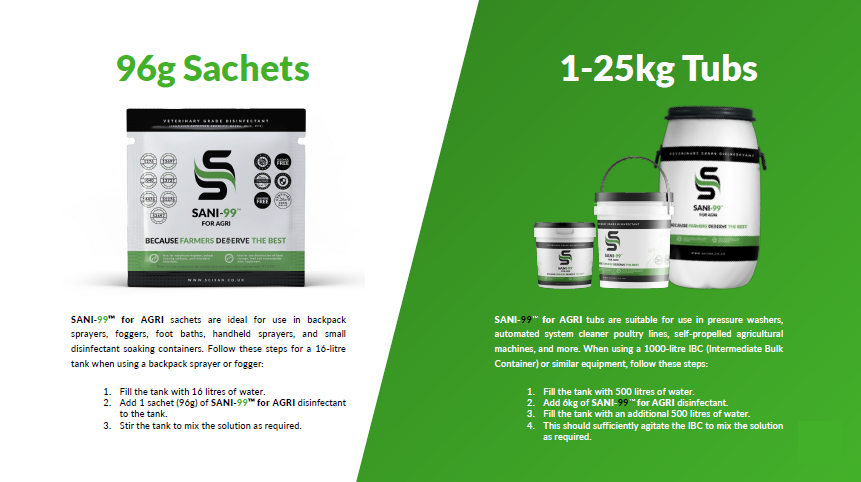
Simple to Deploy
SANI-99™ for AGRI has been developed for practical deployment across both small and industrial agricultural environments.
Standard Sachet Mixing Example
96g Sachet + 16 Litres Water
Coverage guidelines:
- High contamination: up to 160m²
- Medium contamination: up to 400m²
- Low contamination: up to 800m²
The concentrated formula allows scalable deployment while simplifying transport and storage requirements.
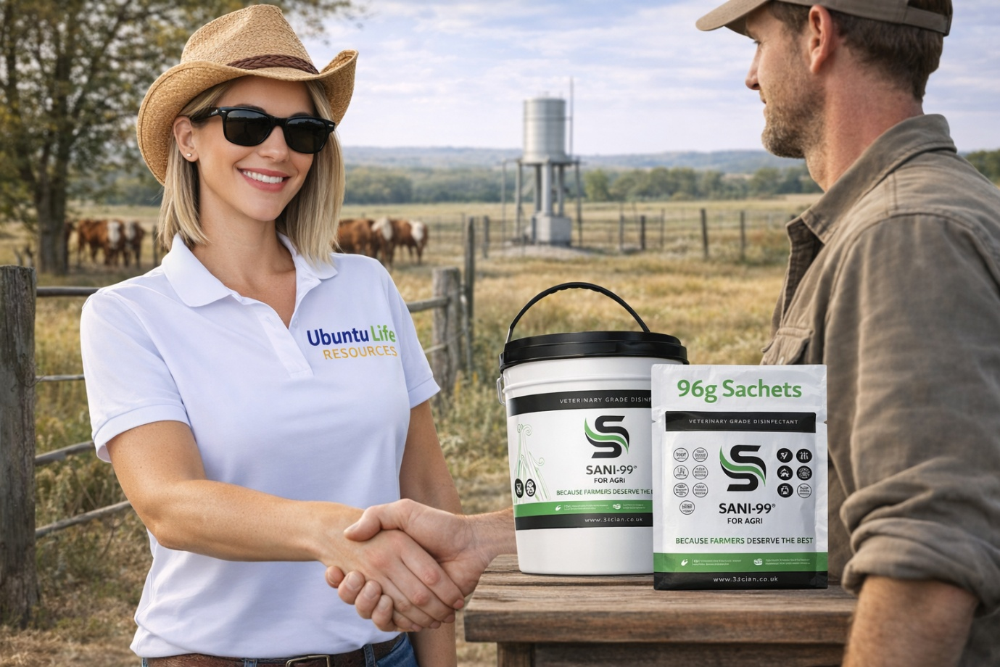
Why Ubuntu Life Resources
Ubuntu Life Resources focuses on supporting:
- Agricultural Biosecurity
- Clean Water Solutions
- Food Security Initiatives
We work alongside agricultural networks, institutional stakeholders and operational partners to help strengthen hygiene and biosecurity standards across Africa and international markets.
Ready to Discuss Agricultural Biosecurity Solutions?
We welcome engagement from:
- Farms
- Poultry Operations
- Dairies
- Abattoirs
- Food Processing Facilities
- Agricultural Groups
- Government Departments
- Distributors
- Biosecurity Stakeholders
Contact Us
- WhatsApp: 079 658 8189
- Email: sanchia@ubuntuliferesources.co.za
- Website: www.ubuntuliferesources.co.za
- LinkedIn: www.linkedin.com/in/sanchia-lynn-smit-935a44404